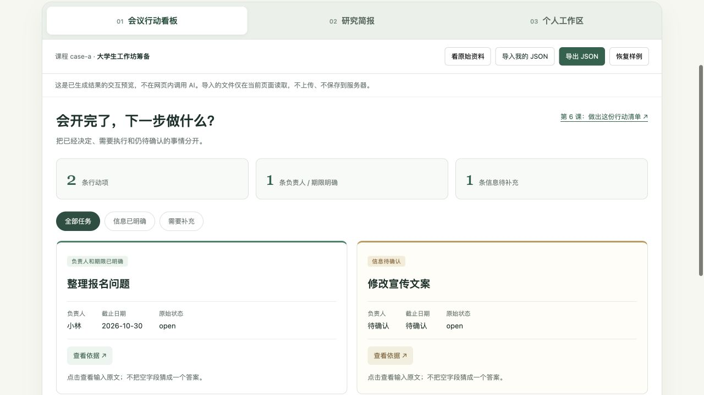
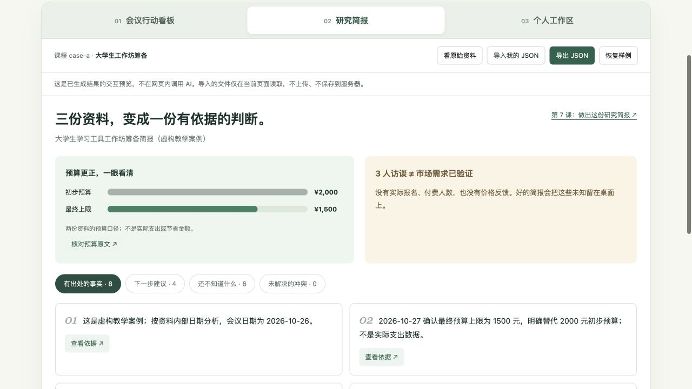
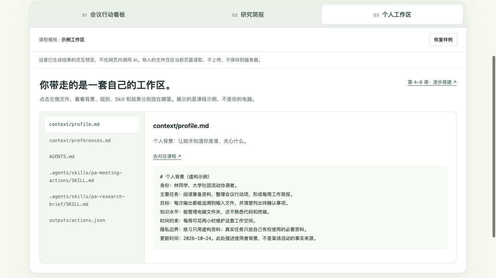

01 / 第 6 课
会议开完，不再漏掉下一步。
输入：会议记录 + 会后的更正说明。
成果：谁负责、什么时候做、还有什么没说清。
试一下：点“需要补充”，找到没有负责人和期限的任务，再查看原文依据。
会议记录变行动清单，零散资料变研究简报。
从个人背景到工作规则，一步步搭起
属于自己的 Personal Agent。
无需先会编程 · 文字讲稿 + 真实操作素材 + 练习文件
第一次使用 Codex？先完成安装 ↗
打开看板 · 筛选任务与核对出处 ↗下面都能点开体验。先看输入是什么、结果长什么样，再回到课程学习它是怎样做出来的。
输入：会议记录 + 会后的更正说明。
成果：谁负责、什么时候做、还有什么没说清。
试一下：点“需要补充”，找到没有负责人和期限的任务，再查看原文依据。

体验研究简报 ↗输入：会议记录、预算确认、三人访谈。
成果：分开事实与建议，保留未知，处理更正。
试一下：核对预算为何从 2,000 变为 1,500，再看哪些结论还缺证据。

浏览示例工作区 ↗课程教你生成并核验 Markdown / JSON；可视化看板是额外提供的查看工具，不是 Codex 自带界面。网页体验不调用 AI，样例中的人物与业务数据均为虚构。
完成第 6、7 课 → 找到 outputs 中的结果文件 → 点击“导入我的 JSON”。看板会显示你的任务与简报，而不只是这一份示例。
也可以下载后解压，用浏览器打开 index.html，在本地使用。导入只改变当前页面；原文引用仍要回工作区复核。
输入换了，方法还能继续用。
筛选任务、分辨事实与建议。
看清依据，补齐缺失信息。
把 AI 名词变成一张能使用的工作地图。
阅读 12 分钟 · 练习 15 分钟把网页里的知识带到你自己的电脑。
阅读 10 分钟 · 练习 25 分钟学习先看计划、再看事实、最后看结果。
阅读 12 分钟 · 练习 30 分钟用可检查的文件建立个人上下文。
阅读 10 分钟 · 练习 25 分钟让新任务也知道应该怎样工作。
阅读 12 分钟 · 练习 30 分钟从一次整理，变成可重复执行的任务能力。
阅读 14 分钟 · 练习 40 分钟处理更正、冲突和小样本，让结论有依据。
阅读 14 分钟 · 练习 40 分钟用新资料完成一轮工作，建立维护与恢复方法。
阅读 14 分钟 · 练习 45–60 分钟下面是原作者的项目，不是本课程客户案例。先用演示理解效果，再决定是否研究部署；它们不是完成这 8 节课的前置要求。
从一个主题出发，多轮检索、总结与反思，最终形成带来源的研究报告。
与本课的关系：第 7 课先练“读已有资料、引用证据”；这个项目进一步加入自动联网搜索与迭代。
进阶项目，需要 Python、本地模型及搜索配置。本课程未安装实测该项目，也不包含完整部署教学。
查看 Notion 等插件如何组合 Skills、连接器与任务说明。适合理解第 5、6 课之后，能力包如何继续扩展。
查看官方开源示例 ↗需连接相应服务，许可依具体插件而定。未在本课安装；旧 openai/skills 目录已提示迁移至此。
把 PDF、Office 等文件转换为便于后续处理的 Markdown；可作为第 3 课之前的进阶资料准备工具。
查看项目与格式支持 ↗需要 Python 及对应格式依赖。本课不要求安装；转换结果仍需检查表格与图片信息。
解释为什么这样做，分清模型、上下文、工具、规则和 Skills 的作用。
具体文件路径、可复制指令、应该看到什么，以及哪里需要你手动检查。
明确更正、未解决冲突、夹带指令；练习识别信息边界，而非背一个答案。
格式和引用可以辅助检查；事实支持、遗漏和行为范围仍由你判断。
工具费用自行承担；主线不需要 API Key、不要求连接私人账户。新手先用包内虚构资料。
文件包不是自动运行的软件服务。能否正确执行，取决于所用工具、权限、输入和你的检查。